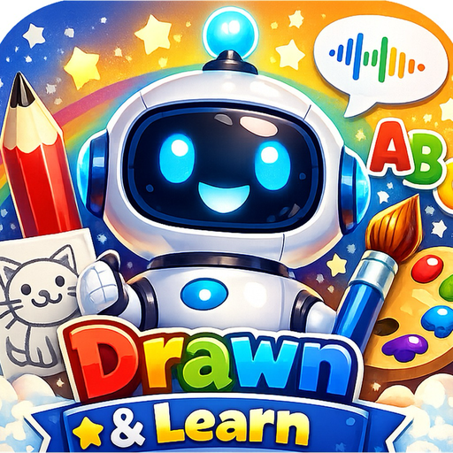
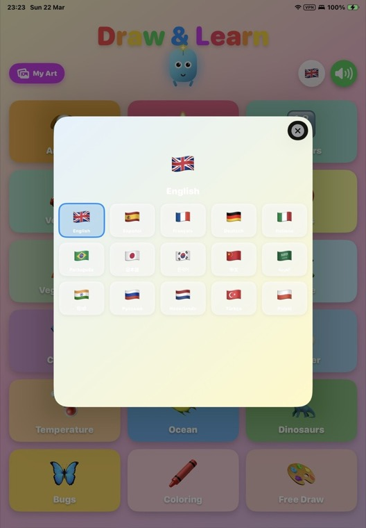
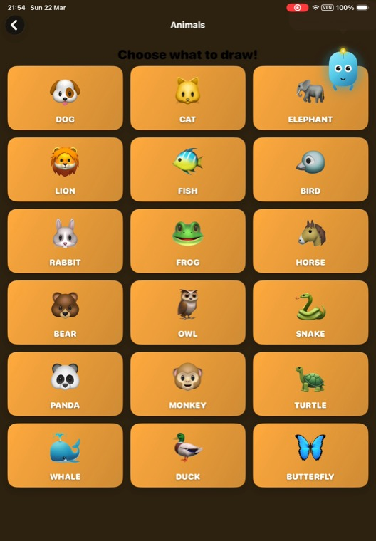

🎨
Smart guided colouring
Tap to fill any region with a custom flood-fill engine that respects outlines perfectly — no bleeding across lines, and an instant response.

iOS · SwiftUI · Independent project
A native iOS app where children trace, colour and learn words in their own language, guided by an animated mascot. I design and build it end to end — from the drawing engine to the App Store submission.
Status: going through App Store submission
Features
A playful, safe learning environment — trace, colour, and hear every word spoken aloud.
Tap to fill any region with a custom flood-fill engine that respects outlines perfectly — no bleeding across lines, and an instant response.
Guided tracing with adjustable difficulty, plus a blank PencilKit canvas for free creativity, with full undo / redo history.
An animated companion with emotion states and interactive taps who flies in to guide, celebrate and encourage.
Every word spoken aloud through on-device text-to-speech, with dedicated phonics packs for early readers.
A fresh challenge each day, star ratings, confetti celebrations and stroke-by-stroke replay of finished drawings.
Progress tracking per category, a parental gate, and StoreKit 2 subscriptions with restore support.
Demo
A short screen recording of a child tracing and colouring their first drawing.





Engineering
The parts I'm most proud of — where the interesting engineering lives.
Bucket colouring is a hand-written Core Graphics algorithm: an 8-directional ray-cast picks the correct seed pixel even when a child taps on an outline, RGB-sum barriers stop fills at lines, and offline-generated per-guide region maps give pixel-perfect containment with instant response — no async, no spinners.
SwiftUI views back onto focused view models, with 11 ObservableObject managers each owning one concern: sound, speech, localisation, difficulty, progress, subscriptions, replay and more.
Strictly async / await — no Combine. Audio runs on a nonisolated static pipeline off the main thread, while @Published state is mutated on the MainActor to keep the canvas glassy-smooth.
A JSON language-pack loader delivers translations and phonics for 18 languages, with inline bundled fallbacks so the app is never left without content.
A transaction listener drives entitlement state, with restore support and a parental gate — built on Apple's current StoreKit 2 APIs.
No force-unwraps on any path a child can reach, 44pt+ tap targets, graceful fallbacks for missing data, and Reduce Motion support that swaps every animation for a static alternative.
Stack